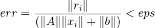
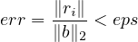
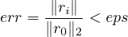

11.1 psb_krylov — Krylov Methods Driver Routine
This subroutine is a driver that provides a general interface for all the Krylov-Subspace
family methods implemented in PSBLAS version 2.
The stopping criterion can take the following values:
-
1
- normwise backward error in the infinity norm; the iteration is stopped when

-
2
- Relative residual in the 2-norm; the iteration is stopped when

-
3
- Relative residual reduction in the 2-norm; the iteration is stopped when

The behaviour is controlled by the istop argument (see later). In the above formulae, xi
is the tentative solution and ri = b - Axi the corresponding residual at the i-th
iteration.
call psb_krylov(method,a,prec,b,x,eps,desc_a,info,&
& itmax,iter,
err,itrace,irst,istop,cond)
-
Type:
- Synchronous.
-
On Entry
-
-
method
- a string that defines the iterative method to be used. Supported values
are:
-
CG:
- the Conjugate Gradient method;
-
CGS:
- the Conjugate Gradient Stabilized method;
-
GCR:
- the Generalized Conjugate Residual method;
-
FCG:
- the Flexible Conjugate Gradient method ;
-
BICG:
- the Bi-Conjugate Gradient method;
-
BICGSTAB:
- the Bi-Conjugate Gradient Stabilized method;
-
BICGSTABL:
- the Bi-Conjugate Gradient Stabilized method with
restarting;
-
RGMRES:
- the Generalized Minimal Residual method with restarting.
-
a
- the local portion of global sparse matrix A.
Scope: local
Type: required
Intent: in.
Specified as: a structured data of type psb_Tspmat_type.
-
prec
- The data structure containing the preconditioner.
Scope: local
Type: required
Intent: in.
Specified as: a structured data of type psb_prec_type.
-
b
- The RHS vector.
Scope: local
Type: required
Intent: in.
Specified as: a rank one array or an object of type psb_T_vect_type.
-
x
- The initial guess.
Scope: local
Type: required
Intent: inout.
Specified as: a rank one array or an object of type psb_T_vect_type.
-
eps
- The stopping tolerance.
Scope: global
Type: required
Intent: in.
Specified as: a real number.
-
desc_a
- contains data structures for communications.
Scope: local
Type: required
Intent: in.
Specified as: a structured data of type psb_desc_type.
-
itmax
- The maximum number of iterations to perform.
Scope: global
Type: optional
Intent: in.
Default: itmax = 1000.
Specified as: an integer variable itmax ≥ 1.
-
itrace
- If > 0 print out an informational message about convergence every itrace
iterations. If = 0 print a message in case of convergence failure.
Scope: global
Type: optional
Intent: in.
Default: itrace = -1.
-
irst
- An integer specifying the restart parameter.
Scope: global
Type: optional.
Intent: in.
Values: irst > 0. This is employed for the BiCGSTABL or RGMRES methods,
otherwise it is ignored.
-
istop
- An integer specifying the stopping criterion.
Scope: global
Type: optional.
Intent: in.
Values: 1: use the normwise backward error, 2: use the scaled 2-norm
of the residual, 3: use the residual reduction in the 2-norm. Default:
2.
-
On Return
-
-
x
- The computed solution.
Scope: local
Type: required
Intent: inout.
Specified as: a rank one array or an object of type psb_T_vect_type.
-
iter
- The number of iterations performed.
Scope: global
Type: optional
Intent: out.
Returned as: an integer variable.
-
err
- The convergence estimate on exit.
Scope: global
Type: optional
Intent: out.
Returned as: a real number.
-
cond
- An estimate of the condition number of matrix A; only available with the CG
method on real data.
Scope: global
Type: optional
Intent: out.
Returned as: a real number. A correct result will be greater than or
equal to one; if specified for non-real data, or an error occurred, zero is
returned.
-
info
- Error code.
Scope: local
Type: required
Intent: out.
An integer value; 0 means no error has been detected.